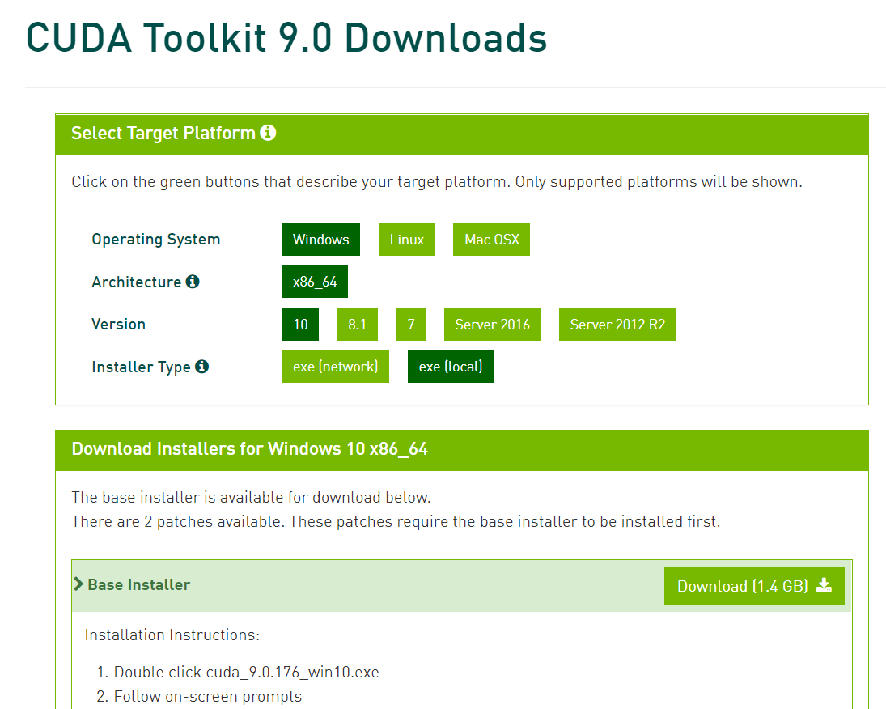

安装Anaconda2和Anaconda3
因为需要用到一些python2的代码，因此决定同时安装Anaconda2和3，搭建python2和3共存的环境。
首先安装Anaconda3作为主要环境，安装文件可以在Anaconda官网上下载，我把它安装在C盘下的Anaconda目录下，一路上没有什么特别需要注意的，两个选项都选中就好了，安装完后在Anaconda3安装目录下的envs文件夹下新建py2目录，如下图：
 安装好后就可以正常使用python2和Python3的环境了，并且可以非常简单的切换。
只需在命令行输入如下命令即可切换到python2环境,这个py2就是上面在Anaconda3安装目录下的envs文件夹下的py2目录名。
安装好后就可以正常使用python2和Python3的环境了，并且可以非常简单的切换。
只需在命令行输入如下命令即可切换到python2环境,这个py2就是上面在Anaconda3安装目录下的envs文件夹下的py2目录名。
activate py2然后用
deactivate py2就可以切换回python3环境 ## 安装cuda
在cuda官网选择下载版本，我选择cuda9.0版本，我的电脑适合版本如下： 
然后开始下载，1.4G，需要一定时间。
下载完成后直接安装，我直接使用的精简安装，更改目录选在D盘下，然而并没有什么效果，还是装到了C盘，但是C盘下面还是会有一个文件夹，如图：
 安装完成后还需要下载cudnn，这个也在官网可以找到，需要注册并填写问卷才能下载。
下载相应版本，之后解压出来，发现有几个文件夹和Cuda安装目录下的文件夹同名，那么直接把文件夹下的内容拷贝到Cuda安装目录中的对应文件夹下就好了。
还要注意的是把下面的路径加入到path环境变量中：
安装完成后还需要下载cudnn，这个也在官网可以找到，需要注册并填写问卷才能下载。
下载相应版本，之后解压出来，发现有几个文件夹和Cuda安装目录下的文件夹同名，那么直接把文件夹下的内容拷贝到Cuda安装目录中的对应文件夹下就好了。
还要注意的是把下面的路径加入到path环境变量中：
C:\Program Files\NVIDIA GPU Computing Toolkit\CUDA\v8.0\lib\x64cuda的安装基本上就结束了。 命令行使用
nvcc --version即可查看cuda版本如下：
安装tensorflow-gpu
这个是最简单的一步，只需要在命令行下使用如下命令即可完成:
pip install tensorflow-gpu 等待即可
等待即可
这个时候遇到了一个bug，说是pip安装一些包的时候有编码问题，google了一下，按照这里的办法，修改了pip的__init__.py文件，完美解决。
测试环境
在交互模式下，引入tensorflow然后创建一个session，可以发现找到了一颗GPU（我电脑上就一个），说明环境搭建成功，接下来就可以开始愉快的玩耍了。 原创文章，引用请注明出处。